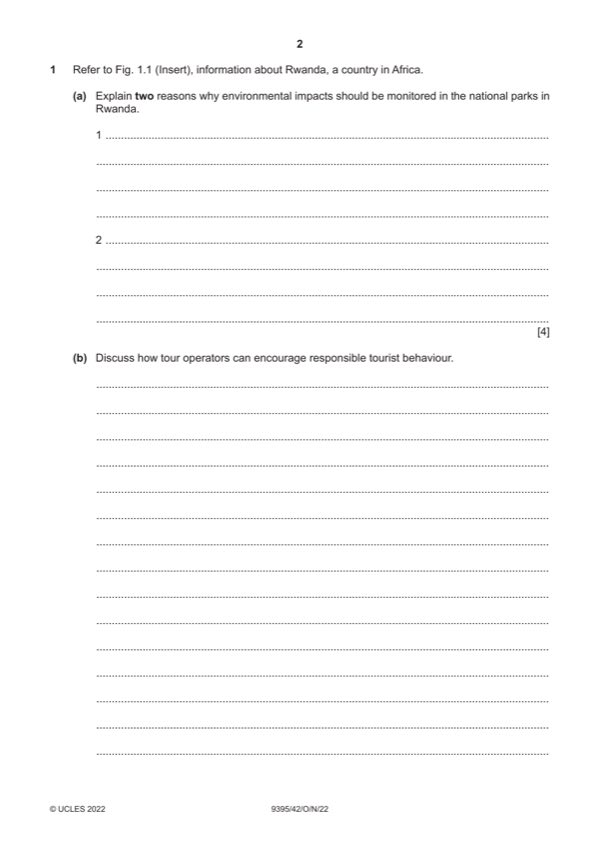

Question 1

Original paper page 2
Part 1(a) — solution
- To show any damage to the National Park [1] and give an opportunity to
- To assess the effectiveness of systems to date [1] and to educate the
- So that better environmental planning and design can be considered [1]
Mark points
- To show any damage to the National Park [1] and give an opportunity to
- To assess the effectiveness of systems to date [1] and to educate the
- So that better environmental planning and design can be considered [1]
Part 1(b) — solution
- Use energy-efficient equipment whenever possible to run tours
- Encourage sustainability by inviting guests to bring a reusable bottle
- Promote recycling at accommodation, on tour vehicles and within
- Offer intimate experiences with small groups, as this will have a less of
- Provide accurate information about the local culture and encourage
Mark points
- Use energy-efficient equipment whenever possible to run tours
- Encourage sustainability by inviting guests to bring a reusable bottle
- Promote recycling at accommodation, on tour vehicles and within
- Offer intimate experiences with small groups, as this will have a less of
- Provide accurate information about the local culture and encourage
Part 1(c) — solution
- Crime
- Social problems, begging, prostitution
- Loss of cultural identity
- Demonstration effect
- Commodification and staged authenticity
- Damage to artefacts and heritage sites
- Changes to family structures
Mark points
- Crime
- Social problems, begging, prostitution
- Loss of cultural identity
- Demonstration effect
- Commodification and staged authenticity
- Damage to artefacts and heritage sites
- Changes to family structures